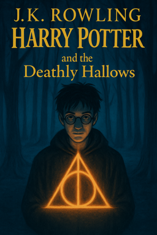

Harry Potter and the Deathly Hallows
Back to Hogwarts  The Great Hall was silent, as though the castle itself were holding its breath. Dust and rubble lay scattered across the floor, the aftermath of the battle. At the center of it all stood Harry and Voldemort, locked in a final standoff, wands raised. “You’re the one who’s weak, Tom,” Harry said, his voice steady, though his heart raced. “And you’ll never understand love or loyalty. That’s why you’ve already lost.” Voldemort’s red eyes blazed with fury. A hiss of rage escaped his lips as he aimed his wand, and for a fraction of a second, the world seemed to freeze.The spells collided with a flash of brilliant gold and green, and for a heartbeat, the air between them crackled with magic. The Elder Wand spun through the air, torn from Voldemort’s grasp as if rejecting him at last. Time seemed to slow as it arced toward Harry, and Voldemort’s own curse, rebounding, struck him squarely. The Dark Lord’s body crumpled to the floor, lifeless at last, his face empty of all the hatred and fear that had once filled it. Silence reigned for a moment more before it broke — cheers, sobs, cries of relief and disbelief as the defenders of Hogwarts surged forward. Harry stood over Voldemort’s body, not in triumph, but in quiet exhaustion. The wand in his hand felt heavy, and the weight of the long struggle pressed down on him. The battle was over. The shadow that had darkened his life since infancy had finally lifted.
Summary
The final chapter of Harry’s saga begins in dark times. Voldemort has risen to full power, and the wizarding world is gripped by terror. The Ministry of Magic has fallen, and Voldemort’s followers, the Death Eaters, are hunting down Muggle-borns, blood traitors, and anyone who stands against them. Even Hogwarts is no longer safe, now under the control of Severus Snape as Headmaster and Death Eaters among the staff. Harry turns seventeen and comes of age in the wizarding world, meaning the protective charm that kept him safe at the Dursleys’ is broken. In a dangerous operation, members of the Order of the Phoenix attempt to move Harry to safety. The mission ends with great cost: Mad-Eye Moody is killed, Hedwig is slain, and George Weasley loses an ear. Harry, Ron, and Hermione set out on a perilous quest to fulfill Dumbledore’s last wish — to find and destroy Voldemort’s Horcruxes, the hidden objects containing fragments of his soul that anchor him to life. They inherit items from Dumbledore’s will: a Snitch for Harry, a Deluminator for Ron, and a book of fairy tales for Hermione — all of which will prove vital. Their journey is filled with hardship. They recover and destroy the locket Horcrux after Ron, who briefly abandoned the group under the locket’s evil influence, heroically returns and saves Harry’s life. Tensions run high as they search for clues, often cold, hungry, and in hiding. As they travel, they learn of the Deathly Hallows, legendary magical artifacts: the Elder Wand, the Resurrection Stone, and the Invisibility Cloak. Voldemort, seeking ultimate power, hunts the Elder Wand, believing it will make him invincible. Harry comes to realize that the wand’s loyalty can’t be won by mere possession, but by truly defeating its previous owner. They infiltrate the Ministry, now a place of oppression, and later break into Gringotts to steal another Horcrux from Bellatrix Lestrange’s vault. With the help of the goblin Griphook, they escape on the back of a dragon. The final battle takes them back to Hogwarts, where students, teachers, and allies rally to defend the castle. As Voldemort’s forces attack, Horcruxes are destroyed — Ravenclaw’s diadem, Hufflepuff’s cup, and the snake Nagini (later). Many die in the fight, including Fred Weasley, Remus Lupin, and Nymphadora Tonks. In a crucial revelation, Harry learns from Snape’s memories that Snape was loyal to Dumbledore all along, motivated by love for Harry’s mother, Lily. He also discovers the terrible truth: he himself is an unintentional Horcrux. In order to defeat Voldemort, Harry must die. Harry walks into the Forbidden Forest, ready to sacrifice himself. Voldemort strikes him down with the Killing Curse. But Harry doesn’t truly die — protected by his mother’s sacrificial magic and the Elder Wand’s confused loyalty, he meets Dumbledore in a dreamlike King’s Cross and is given the choice to return. Back at Hogwarts, Voldemort calls for surrender. But Harry emerges alive, and the final duel begins. The Elder Wand refuses to harm its true master: Harry. Voldemort’s own curse rebounds, and the Dark Lord dies at last — not with a bang, but as a mortal man, defeated by his own evil.
back to top